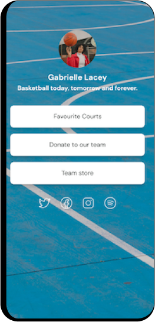
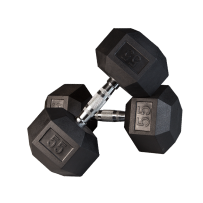
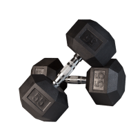
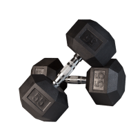
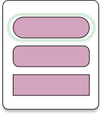
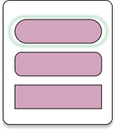

Just one link for everything
Join 35M+ people for their link in bio. One link to help you share everything you create, curate and sell from your Instagram, TikTok, Twitter, YouTube and other social media profiles.
LINKATY/



 



 
